1.3. Define Machining Process data
1.4. Loading Cutting tool Coating material
1.5. Defining Cutting Tool geometry
1.10. Set the Workpiece geometry data
1.11. Assigning Workpiece material
1.12 Generating Mesh for workpiece
1.13. Workpiece Boundary condition page
This lab will briefly demonstrate how to use the machining template to prepare model data representing orthogonal cutting conditions (cutting edge is orthogonal/perpendicular to the cutting direction) to simulate chip formation process. Interactive definition of the process conditions, cutting edge, coating, material, steady state and tool stress related features are discussed here. Brief description of the orthogonal cutting conditions and how the process parameters are related to the modeling domain are indicated as shown in the Fig. 2DSSL1.1.
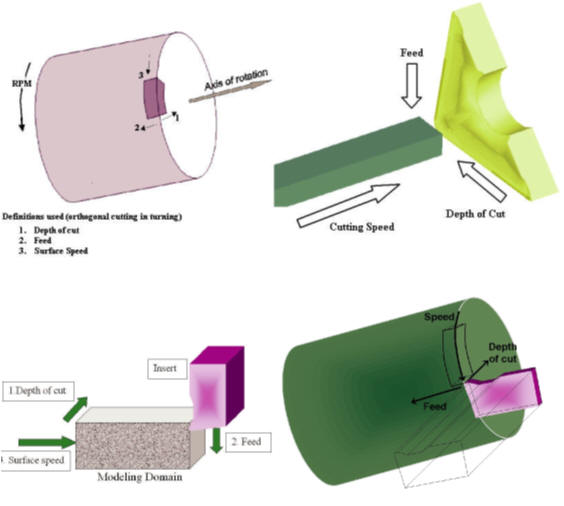
Relationship between the process data and analysis domain
We can open 2D Cutting wizard in two ways:
a. Create a new problem either by selecting File  New Problem or by clicking the New Problem
New Problem or by clicking the New Problem  icon. The Problem Setup window will appear. Select " Integrated Manufacturing Process" radio button and Unit system as "SI" using
radio button. Define Problem Name as "2D_CUTTING_STEADY" and click on
icon. The Problem Setup window will appear. Select " Integrated Manufacturing Process" radio button and Unit system as "SI" using
radio button. Define Problem Name as "2D_CUTTING_STEADY" and click on  button to open a new Problem using the Integrated Manufacturing Process. Multiple Operation
wizard will open, at this point user will be prompted to specify a project name (system will create a separate folder with this project name) and title for this session. In this session we will use "2D_CUTTING_STEADY" as
the project name. Click on
button to open a new Problem using the Integrated Manufacturing Process. Multiple Operation
wizard will open, at this point user will be prompted to specify a project name (system will create a separate folder with this project name) and title for this session. In this session we will use "2D_CUTTING_STEADY" as
the project name. Click on  to continue to open the operation. Integrated Manufacturing Process will open, add 2D Cutting operation from the Explorer Operations list. Add the operation
by clicking on
to continue to open the operation. Integrated Manufacturing Process will open, add 2D Cutting operation from the Explorer Operations list. Add the operation
by clicking on  button available next to 2D Cutting or by drag and drop into the Operation editor.
button available next to 2D Cutting or by drag and drop into the Operation editor.
b. Create a new problem either by selecting File  New Problem or by clicking the New Problem
New Problem or by clicking the New Problem  icon. The Problem Setup window will appear. Select "2D Cutting" radio button and Unit system as "SI" using radio button as shown in Fig. 2DSSL1.2. Define
Problem Name as " 2D_CUTTING_STEADY" and click on
icon. The Problem Setup window will appear. Select "2D Cutting" radio button and Unit system as "SI" using radio button as shown in Fig. 2DSSL1.2. Define
Problem Name as " 2D_CUTTING_STEADY" and click on  button to open a new Problem with 2D Cutting operation in MO wizard.
button to open a new Problem with 2D Cutting operation in MO wizard.
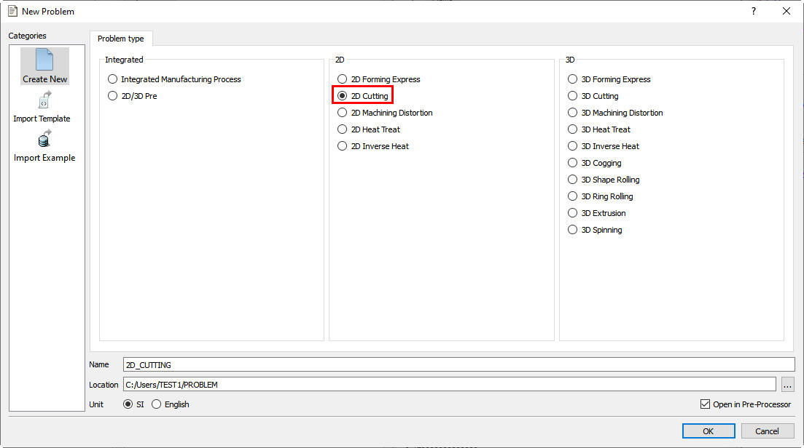
Problem Setup page
Under the ‘Process’ menu, Select Simulation type as 'Steady-state Analysis', enter the Environment Heat Transfer temperature as
22.5°C and use default Convection coefficient 0.02 N/sec/mm/C. Select the ‘Surface speed as 250 m/min and
feed rate as 0.15 mm/rev’ (see Fig. 2DSSL1.3.). Alternatively user can
also specify rotational speed of the workpiece and part diameter instead of surface speed. Then click on  .
.
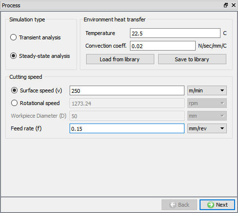
Process page
In Material List page, load 'Coating-TiN' and 'Coating-Al2O3' Material from Tool_Material category for assigning to Tool coating. Then click on  until Tool page.
until Tool page.
In ‘Tool’ page, enter the tool temperature as 20°C. We can import the cutting edge geometry from a previously defined simulation keyword file or a database file using Import Object option. For this lab we will define the cutting edge geometry using
the primitives available with the system. Click on  to enter the ‘Insert Geometry’ menu (see Fig. 2DSSL1.4.)
and click on
to enter the ‘Insert Geometry’ menu (see Fig. 2DSSL1.4.)
and click on  . Select #3 geometry in Primitive page and use default geometry parameters. Click on
. Select #3 geometry in Primitive page and use default geometry parameters. Click on  to create geometry. Then click on
to create geometry. Then click on  to come out of ‘Geometry Primitive’ menu and click on
to come out of ‘Geometry Primitive’ menu and click on  to proceed.
to proceed.
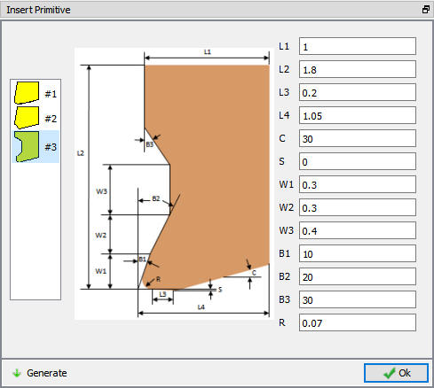
Insert Primitive Window
Assign ‘Coating Material’ and thickness in Coating material table, add ( ) two layers of coating. For the outer layer select 10 microns as coating thickness and ‘TiN’ as the material and for
the inner layer select 10 microns as the coating thickness and ‘Al2O3’ as the coating layer (see Fig. 2DSSL1.5.).
Click on
) two layers of coating. For the outer layer select 10 microns as coating thickness and ‘TiN’ as the material and for
the inner layer select 10 microns as the coating thickness and ‘Al2O3’ as the coating layer (see Fig. 2DSSL1.5.).
Click on  to proceed.
to proceed.
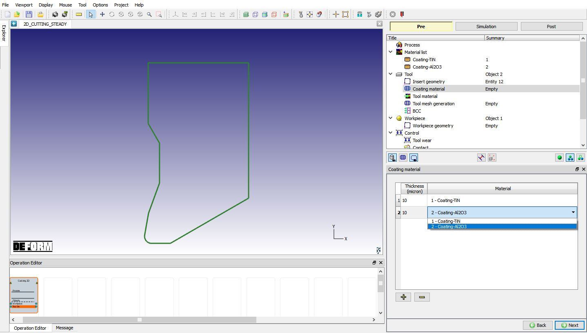
Coating layer and Material Definition
In Material Window, click on  to Load material data from Library and load 'WC' material from 'Tool_Material' category by
clicking
to Load material data from Library and load 'WC' material from 'Tool_Material' category by
clicking  button as shown in Fig. 2DSSL1.6. Click on
button as shown in Fig. 2DSSL1.6. Click on  to generate Mesh for the Tool.
to generate Mesh for the Tool.
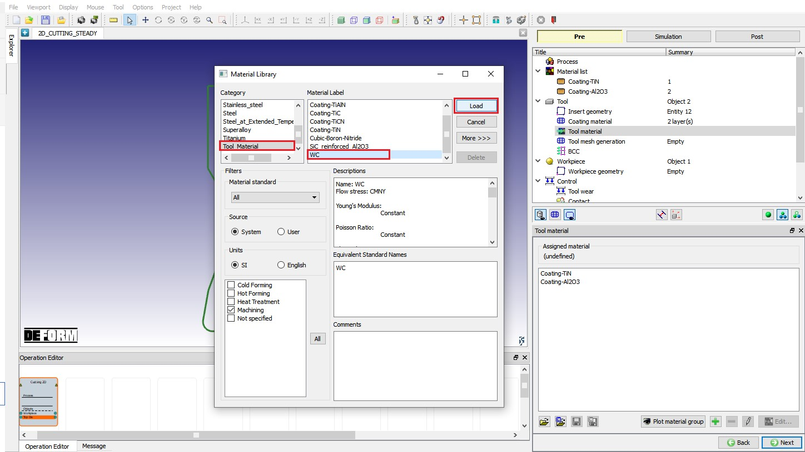
Loading Tool material from Material Library
In the Tool mesh generation menu select ‘700’ as the target number of elements for the insert and click on  (see Fig. 2DSSL1.7.).
Click on
(see Fig. 2DSSL1.7.).
Click on  to proceed.
to proceed.
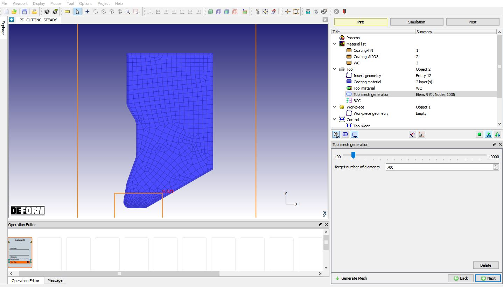
Tool Mesh page
Next step is to view the thermal boundary conditions generated by the system in the BCC menu. The program generates heat exchange with environment (part of which comes from insert contact region) and the fixed nodal temperature BCC for the surfaces
away from the cutting edge (see Fig. 2DSSL1.8.). Click on  to proceed to the workpiece setup.
to proceed to the workpiece setup.
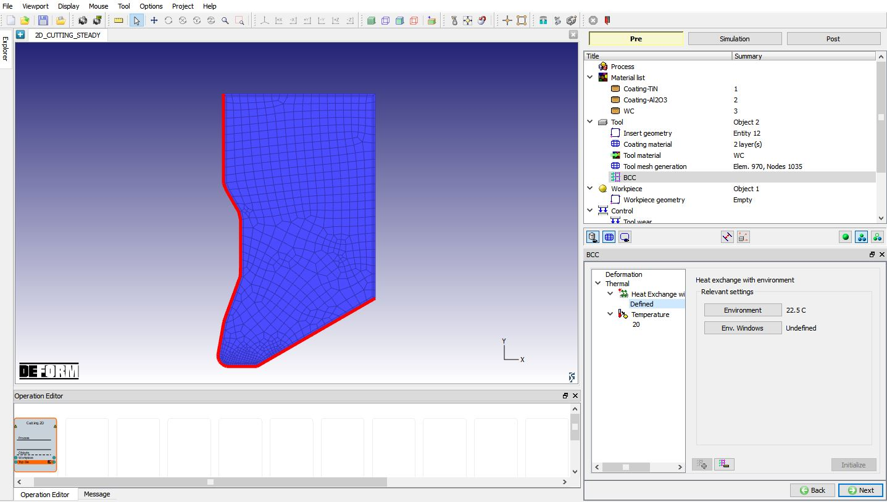
Tool Boundary Condition
In the ‘Workpiece setup’ define workpiece as a plastic object and temperature as 22.5 °C and click on  to proceed. Click on
to proceed. Click on  label in the ‘Workpiece geometry’ page. Generate geometry using the parameters:
label in the ‘Workpiece geometry’ page. Generate geometry using the parameters:
WP length (L) = 4.5, WP height (H) = 1, Cut length(L1) = 1.5, Chip height(H1) = 0.5, Contact length (D) = 0.4, R1 = 0.3, R2 = 0.1, Chip thickness (C1) = 0.165. Click on  to create
the workpiece geometry (see Fig. 2DSSL1.9.). Click
to create
the workpiece geometry (see Fig. 2DSSL1.9.). Click  to close
this geometry menu and click on
to close
this geometry menu and click on  to go to Material page.
to go to Material page.
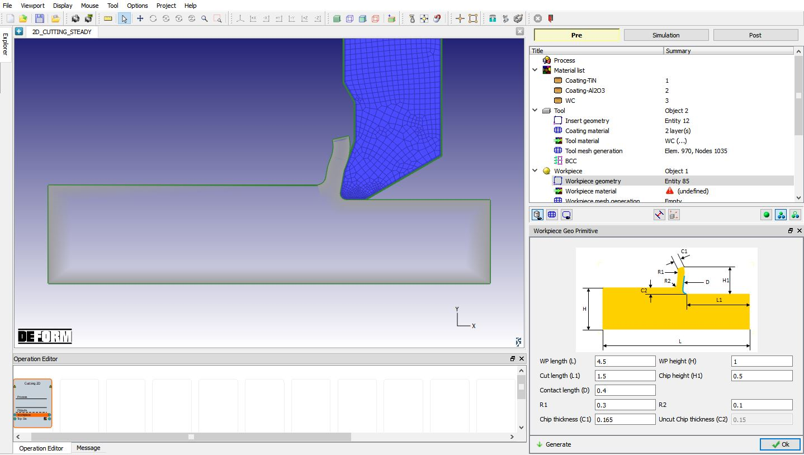
Defining Workpiece geometry
In ‘Workpiece material’ page, choose the option ‘import material from library’  option, select ‘Steel’ category and ‘AISI-1045 (machining)’, load
this material by clicking on
option, select ‘Steel’ category and ‘AISI-1045 (machining)’, load
this material by clicking on  button (see Fig. 2DSSL1.10.) and click
on
button (see Fig. 2DSSL1.10.) and click
on  to generate Mesh.
to generate Mesh.
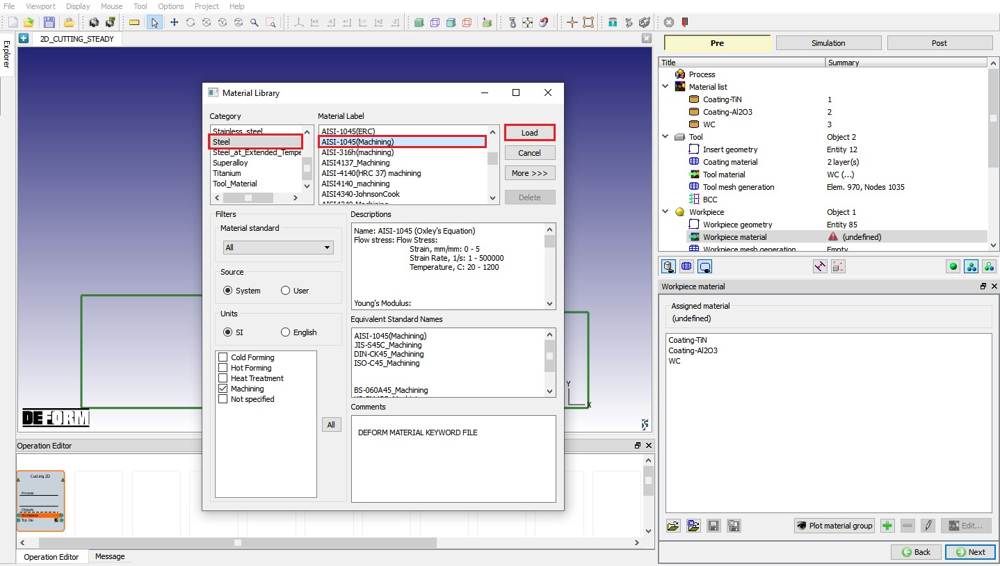
Loading Workpiece material form Library
Select 15 as No. of elements through uncut chip thickness for the workpiece and click on  to complete mesh generation for the workpiece (see Fig. 2DSSL1.11.).
Click on
to complete mesh generation for the workpiece (see Fig. 2DSSL1.11.).
Click on  to BCC page.
to BCC page.
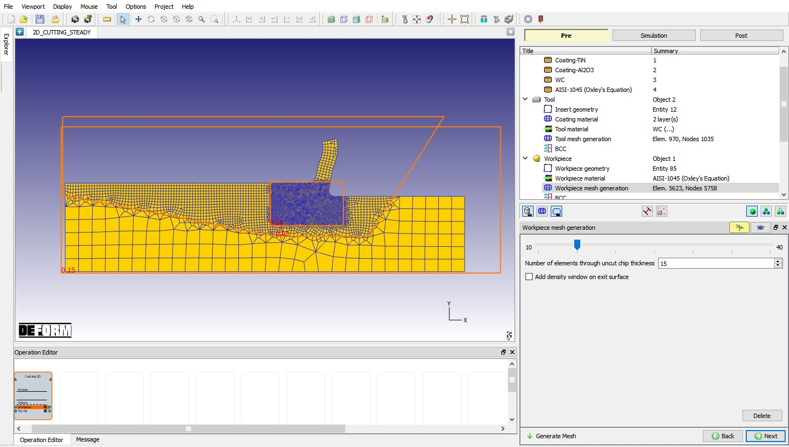
Workpiece mesh page
In the ‘View Workpiece BCC’ menu, check the boundary conditions imposed on workpiece by the system (see Fig. 2DSSL1.12.),
and click on  . Note the velocity BCC assigned to the bottom edge away from the cutting surface to prevent workpiece from flying. From V13.0.1, instead of Surface Velocity (Vx) BCC, Movement
BCC will be defined to +X edge and bottom edge of the Workpiece (See Fig. 2DSSL1.12. ) and movement will be defined in
Movement page of the Workpiece.
. Note the velocity BCC assigned to the bottom edge away from the cutting surface to prevent workpiece from flying. From V13.0.1, instead of Surface Velocity (Vx) BCC, Movement
BCC will be defined to +X edge and bottom edge of the Workpiece (See Fig. 2DSSL1.12. ) and movement will be defined in
Movement page of the Workpiece.
Beginning surface BCC is assigned to the surface (-X edge (left side) of the Workpiece) away from the cutting direction. Free surface BCC is assigned to top edge of the chip and to the surface from where Cutting is started (+X edge (right side)
of the Workpiece), See Fig. 2DSSL1.13.
Heat Exchange with BCC is assigned to top edge surface except top edge of the chip. Temperature BCC is assigned +X edge (right side) and bottom edge of the Workpiece, See Fig. 2DSSL1.14. Click
on  .
.
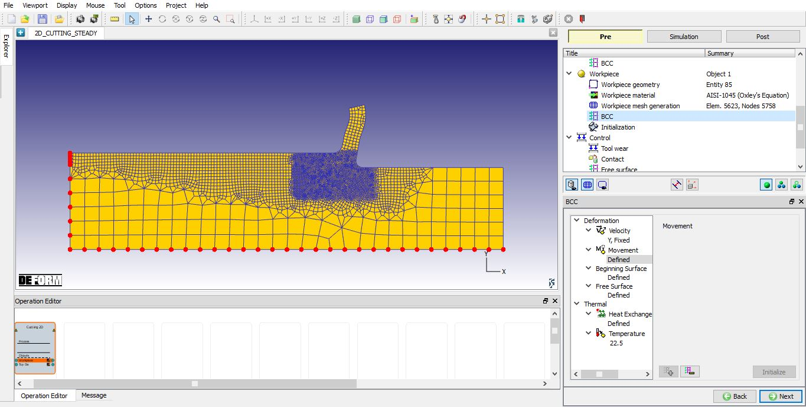
Movement Boundary Condition for Workpiece
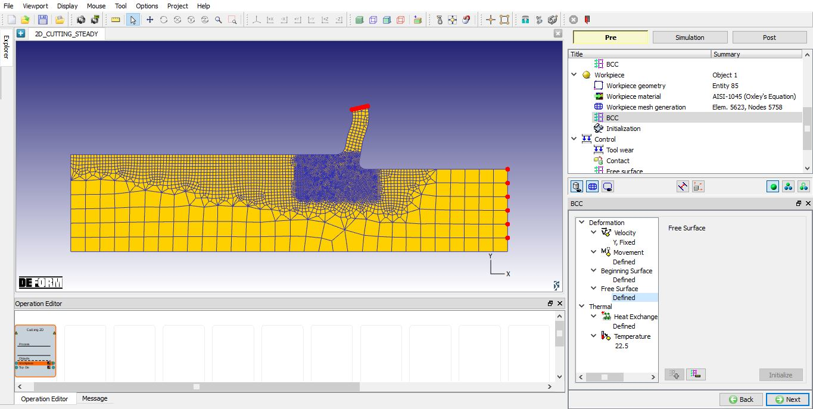
Free Surface BCC assigned for Workpiece
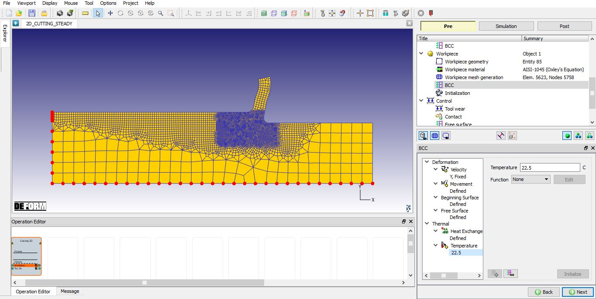
Temperature BCC assigned for Workpiece
In Initialize page, we can initialize the workpiece strain value (see Fig. 2DSSL1.15.). In this lab, we are not initializing any strain value,
so click on  until Tool wear page.
until Tool wear page.
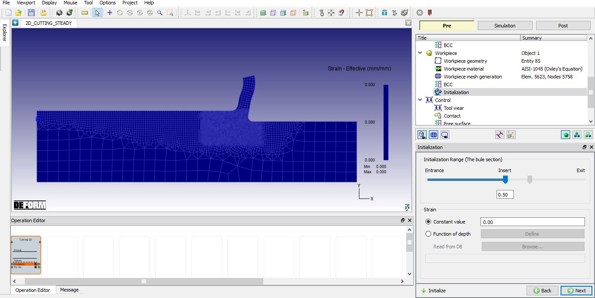
Initialize page
Select Usui’s model and input coefficients a, b, please note that these (shown next to the equation) are only some typical values that can be obtained from the literature, and user is responsible for accuracy of this data (see Fig. 2DSSL1.16.).
Click on  to contact page.
to contact page.
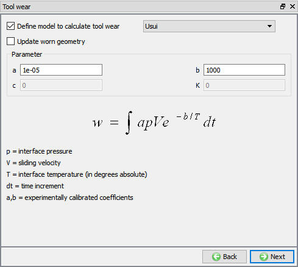
Tool wear setup window
In Contact page, use default relations. Click on Tool - Workpiece relation Edit  button and define shear friction factor as 0.48 and the interface heat transfer coefficient as 39.5 N/sec/mm/C, click on
button and define shear friction factor as 0.48 and the interface heat transfer coefficient as 39.5 N/sec/mm/C, click on  to generate contact (as shown in Fig. 2DSSL1.17.). Click on
to generate contact (as shown in Fig. 2DSSL1.17.). Click on  unit Step
control page.
unit Step
control page.
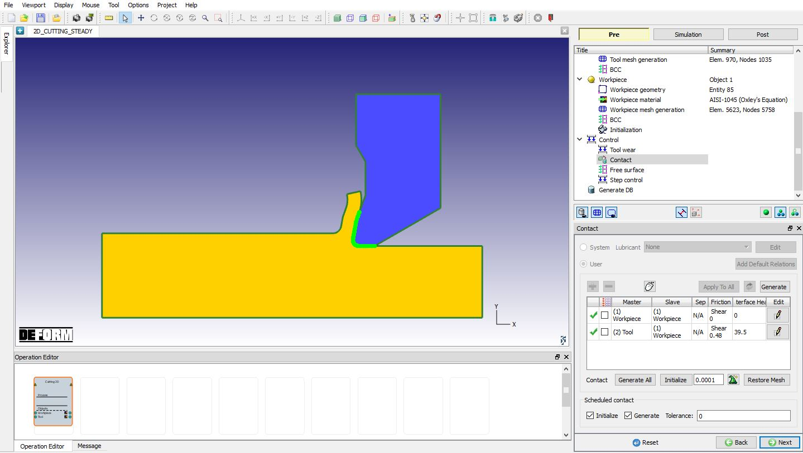
Contact page
In Step controls page, we will use default Temperature convergence and Strain convergence method which is UL solution: 50 along with default convergence tolerance value (as
shown in Fig. 2DSSL1.18.). Click on  .
.
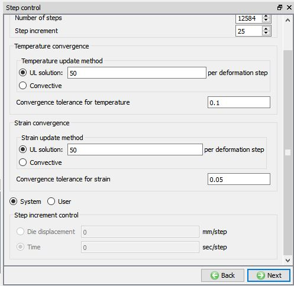
Step Control page
In Generate DB page. Click on the  button to generate the database. Observe the message in Message tab informing database generation status.
button to generate the database. Observe the message in Message tab informing database generation status.
Once the database has been generated switch to the Simulation mode by clicking on  button above the operation tree. Click on the
button above the operation tree. Click on the  action label to open the Run Options dialog as shown in Fig. 2DSSL1.19. Use the default
Continue Run option to select “Continue from the last step” (from step -1) option and then select the Simulation mode as Interactive radio button. Click on
action label to open the Run Options dialog as shown in Fig. 2DSSL1.19. Use the default
Continue Run option to select “Continue from the last step” (from step -1) option and then select the Simulation mode as Interactive radio button. Click on  button to run the simulation.
button to run the simulation.
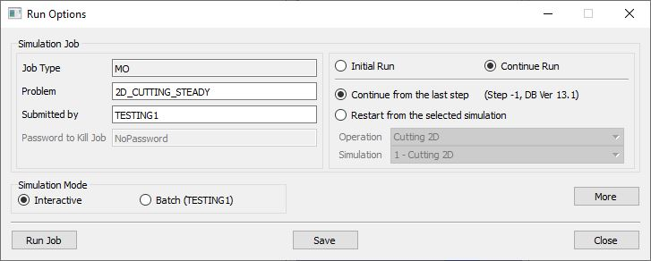
Run Simulation window
Monitor the progress of the simulation by looking at the Simulation Message and Simulation Log tab, making sure that the  option is checked. User can view the cutting process
as the simulation proceeds to the specified cutting length from Simulation graphics.
option is checked. User can view the cutting process
as the simulation proceeds to the specified cutting length from Simulation graphics.
When the simulation is finished by reaching steady state, we can observe that the following message is added to the end of the Message file:
Steady state thermal solution has converged
Steady state strain solution has converged
Steady state chip free surface computations have converged
******Message*******
Steady state solution has converged
When the simulation is completed, review the results by switching to Post mode using the  button above the Simulation tool bar.
button above the Simulation tool bar.
Plot Temperature State variable, play through the steps and look the temperature generated in Cutting zone (see Fig. 2DSSL1.20.) .
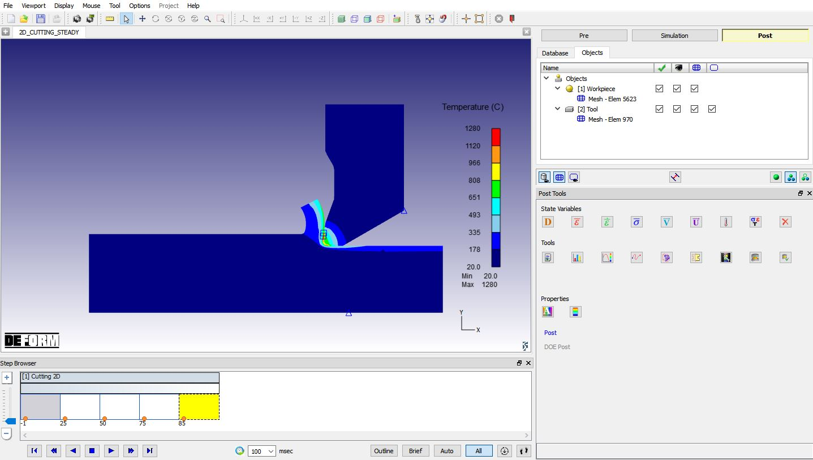
Temperature plot in Steady state Cutting operation
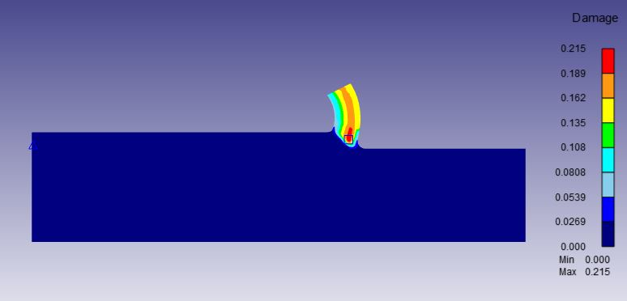
Damage plot for workpiece object